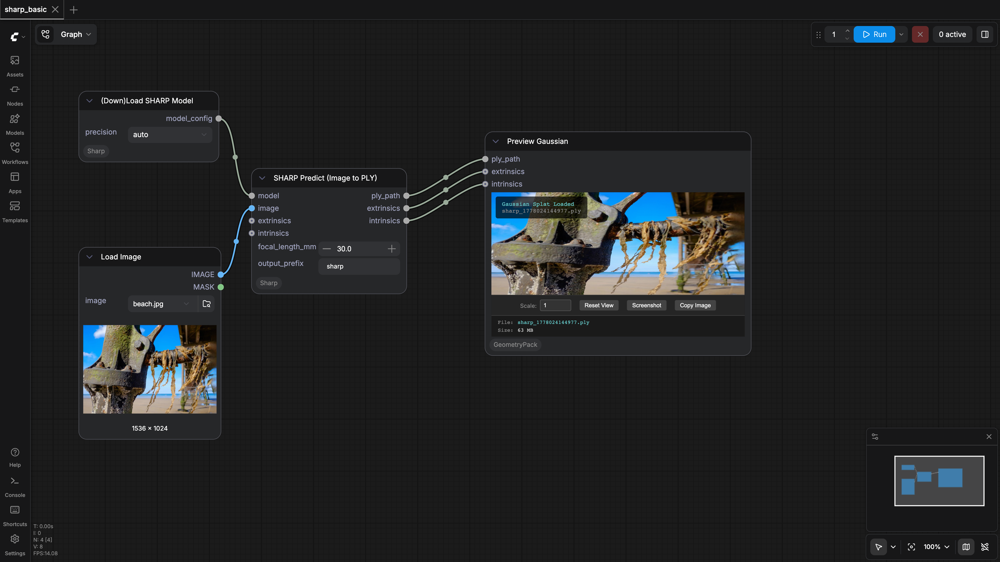
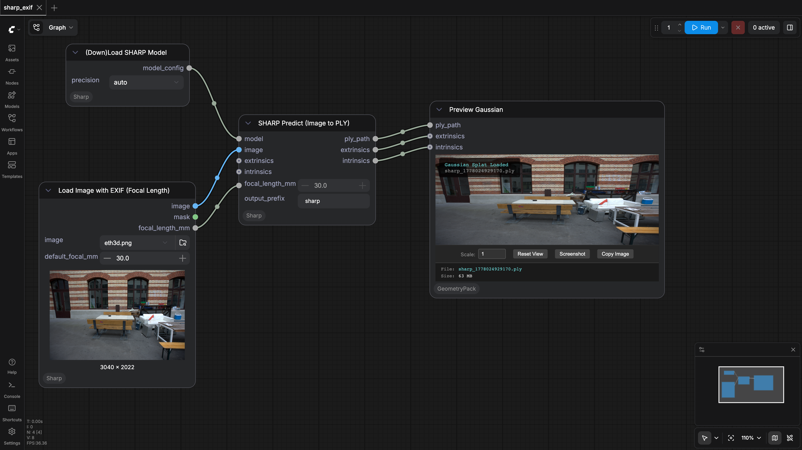

ComfyUI-Sharp
Test Results
2026-05-06 00:03 UTC
macOS-15.7.4-arm64-arm-64bit
arm
100.0%
2 passed
2/2 tests
Workflows
Grid
List

sharp_basic
pass
822.87s

sharp_exif
pass
908.12s
Downloaded Models
4 files · 2.6 GB
models/sharp/
2.6 GB
sharp_2572gikvuh.pt
2.6 GB
.cache/huggingface/CACHEDIR.TAG
191.0 B
.cache/huggingface/download/sharp_2572gikvuh.pt.metadata
124.0 B
.cache/huggingface/.gitignore
1.0 B
×
‹
›
0.0s / 0.0s
Resource Usage
RAM (GB)
VRAM (GB)